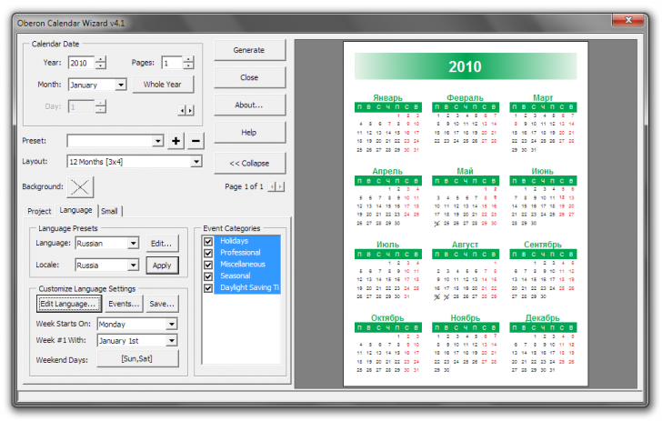

Пришлось отметить несколько. В частности не могу отказаться от использования 9-ки, по двум причинам. Из-за полюбившейся много лет назад утилиты Calendar Wizard которая требует именно 9-ю версию для формирования календаря. А во-вторых из-за Bar-сod соторый в более поздних версия стал интегрироваться в документ как OLE-объект, или как битмап. А нужен вектор. Но вот Санчо сейчас, в очередной раз откроет мне глаза, и 9-ку можно сносить! Да?
Да! )))) Я тоже указал две версии Х4 и Х5, как только SP1 выйдет, то Х4 снесу!
Добрый_ХАМ / 25.05.2010, 20:53
Black, Да, про календарный макрос в Corel я знаю. Так я с ним не сдружился. Не все желательные функции там имеются. Такие, не пример, как настройка толщины линий в сетке, её цвет, возможность полностью отключить её отображение. Нет возможности автоматически компоновать сетку в слои и группы, дни недели в вертикальную колонку не строятся (причём, иногда ведь надо чтоб они только один раз в начале всего ряда месяцев были, а не у каждого месяца). Да и отсутствие румынского языка, для меня принципиально. У меня тут он весьма востребован. В опчем, пока остаюсь на своей версии Calendar Wizard 2.3. Эх, жаль автор программы, её под следующие версии Corel не адаптировал.... А про макрос "Paste As" я совсем не понял... Он как то связан с утилиткой Corel BarCod?
Black, Не встречал. Но судя по отзывам, у него функционал не отличается от предустановленного в Corel Calendar Wizard. Но попробую при возможности. Спасибо!
Black / 27.05.2010, 10:17
Добрый_ХАМ, интересно, тогда зафига его продавать за $37.50 если его функционал ни чем не отличается :D :D :D :D
1. http://cdrpro.ru/news/2010-01-31-214
2. http://cdrpro.ru/news/2009-08-09-141 (в частности, вставка как метафайл)
Сноси 9ку!
Я тоже указал две версии Х4 и Х5,
как только SP1 выйдет, то Х4 снесу!
А про макрос "Paste As" я совсем не понял... Он как то связан с утилиткой Corel BarCod?
